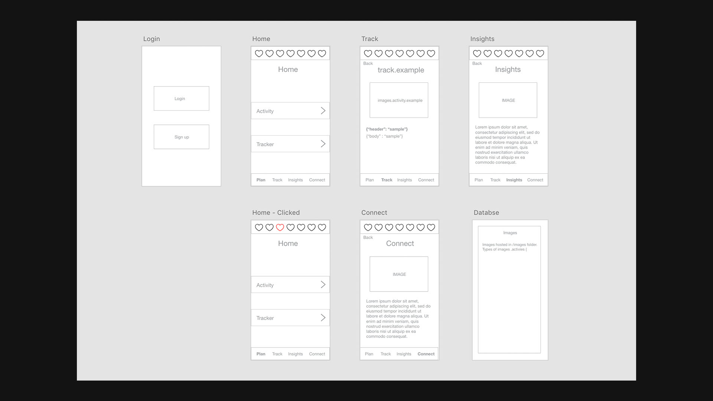
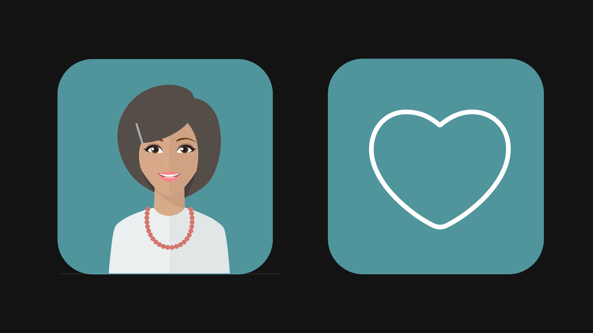
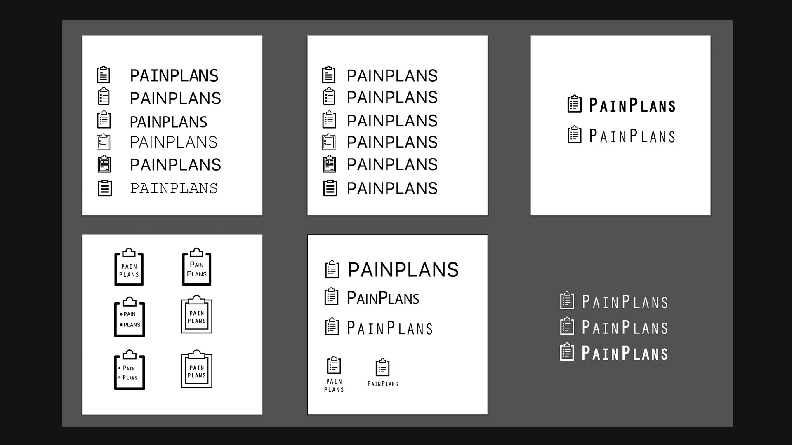

2018 / AI research / software / product design
A set of early AI product experiments exploring conversational interfaces, character-driven assistants, health data, mobile UX, and software systems that could respond to behavior over time.

The project began as a way to build smarter collaboration tools, then moved into assistant-driven interfaces that could understand intent, ask better questions, and give people a more natural path through complex health information.
The important shift was emotional as much as technical. The interface needed to feel less like a form and more like a responsive presence, while still being grounded in clear product logic.




ExCollectives became a place to test how intelligence, trust, data, character, and product behavior fit together. It connects directly to the current portfolio focus: AI tools that have technical depth, but still feel designed by a person.